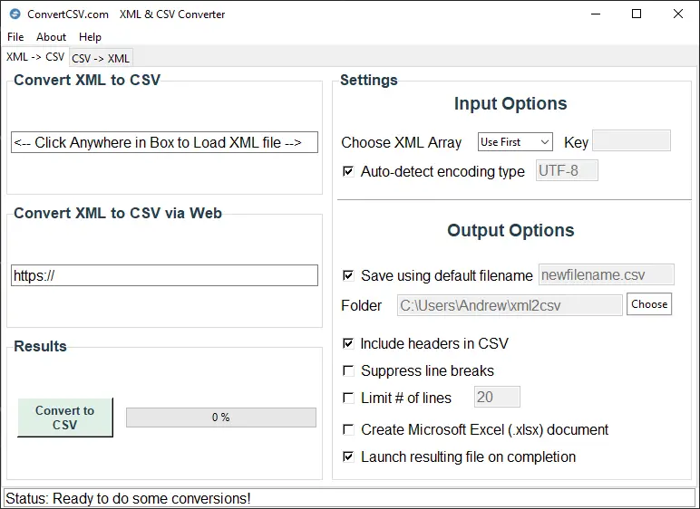
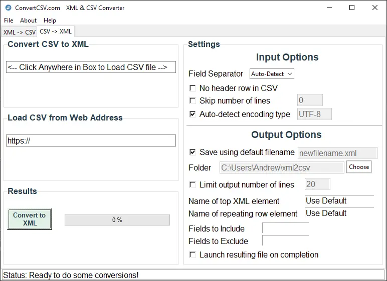

XML to CSV Desktop Converter¶
Description¶
Use this desktop application to convert XML to CSV and CSV to XML. This application can load files either from your local computer or load files from the world wide web.
XML to CSV¶
{kind=link}
Convert XML To CSV¶
Using our tool is simple
- You must choose an input file as either a local file on your hard-drive or a web address.
- Choose Input and Output settings
- Press the Convert to CSV button
Click Anywhere in Box to Load Local File¶
Click your mouse in this area to choose a local file as input.
Load File from the Web¶
Enter a web address here that identifies the input file.
Conversion Input Options¶
Choose XML Array¶
This allows the user to either choose the First array, the Largest array, or specify a Key to use while converting. The application’s default value is the use the First array it finds. However, sometimes if this fails, it may be optimal to allow the program to convert based off the Largest array. For complex or deeply nested XML, it is recommended to specify the XML keyword or Key for which to base the conversion.
Encoding Type¶
The default value of Auto-Detect should be used in almost all cases. If this does not work, please specify the encoding type of the XML file.
Conversion Output Options¶
FileName and Folder¶
These parameters will allow you to choose the conversion filename and where to save the output file. You must have write access to the output directory to save the converted file, or the application will raise an error message.
Include Headers in CSV¶
This option is self explanatory; but will create a header row as first row of CSV file. Including headers is the default value
Suppress Line Breaks¶
This option will remove any carriage returns and line feeds from the data as it is written to the CSV file
Limit # of Lines¶
This option will only create the specified number of rows in the CSV file
Create XLSX Document¶
This option will create a .xlsx file as the output file.
Launch on Completion¶
This option is checked as the default; and will use the system default program to open the CSV file
CSV to XML¶
{kind=link}
Convert CSV To XML¶
Using our tool is simple
- You must choose an input file as either a local file on your hard-drive or a web address.
- Choose Input and Output settings
- Press the Convert to XML button
Click Anywhere in Box to Load Local File¶
Click your mouse in this area to choose a local file as input.
Load File from the Web¶
Enter a web address here that identifies the input file.
Conversion Input Options¶
Field Separator¶
Default setting is to auto-detect the field separator in the CSV file. However, you can explicitly set it with this option.
No Header Row in CSV¶
Use this option if the first row in the CSV file consists of values and not header names
Skip Number of Lines¶
This option will skip a set # of lines before beginning to read input from the CSV file
Auto-Detect Encoding Type¶
The default option is to auto-detect the CSV encoding type; However, you may specify a choice in the input box.
Conversion Output Options¶
FileName and Folder¶
These parameters will allow you to choose the conversion filename and where to save the output file. You must have write access to the output directory to save the converted file, or the application will raise an error message.
Limit # of Lines¶
This option will limit the total number of XML lines that are written.
Name of Top XML Element¶
This option sets the name of the top XML element. The default is root
Name of Repeating Row Element¶
This option sets the name of repeating row element. The default is row
Fields to Include¶
This option allows you to specifically set which field columns to include. You can either specify the column number (starting at 1) or the field name based on the header. You can use a range with field numbers, i.e. 2-6 , which indicates fields 2 through 6. Default value is blank to include all fields.
Fields to Exclude¶
This option allows you to specifically set which field columns to exclude. The field list starts with 1. If we enter 3,4,5, then we are excluding field 3,4, and 5 and including the other fields. Default value is blank to not exclude any fields.
Launch File on Completion¶
This option will use the system default program to open the XML file. If no default is set, it will not open. You may need to set the system default for XML filetypes. Try to open the resulting file with any text editor or notepad.